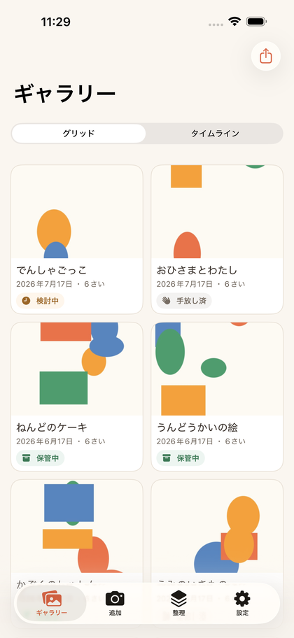
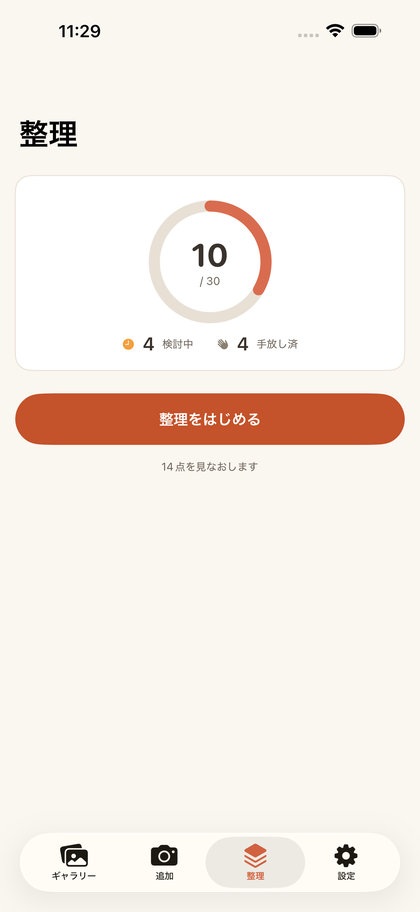
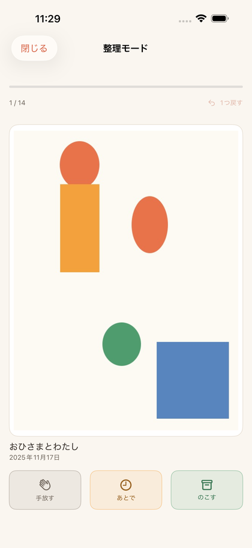

Drawings and crafts come home from school every week. Every piece has a memory in it — and the shelf is already full.
SakuLog photographs each one beautifully so you can let the original go without guilt.



iPhone / iOS 26.0 or later · English & 日本語 · No account required
Point the camera at the artwork. The perspective is straightened automatically and the desk and margins trimmed away. Crafts can be captured from as many angles as you like.
Add your child's birth month and SakuLog works out how old they were for every piece. The timeline groups artworks by age, so their growth becomes the record itself.
A dedicated archive for artwork alone — browsable by child, by age and by kind, without wading through everyday photos.
Plenty of apps will archive photos. What makes SakuLog different is that it supports the decision about the physical original.
The storage dashboard shows the number of physical pieces you're keeping. Set your own rule — "30 pieces a year" — and the gap to your goal is right there in numbers.
Organize mode deals the artworks out one card at a time. Swipe right to keep, left to release, up to decide later. Tapped the wrong one? Undo puts it back.
The photo stays either way. It's simply marked as released. Even after the original goes, the artwork stays here.
Photographs of your children's work are deeply private. SakuLog never asks you to create an account. Your artworks are never sent to a developer's server — they live on this device and in your own iCloud, syncing automatically across devices signed in to the same Apple Account.
No tracking. No ads. Nothing held hostage if the app goes away.
| Feature | Free | Full access |
|---|---|---|
| Artworks | Up to 50 | Unlimited |
| Children | 1 | Unlimited |
| Capture & auto-straighten | ✓ | ✓ |
| Timeline by age | ✓ | ✓ |
| iCloud sync (your devices) | ✓ | ✓ |
| Search & filters | ✓ | ✓ |
| Let-go album | ✓ | ✓ |
| Export all your data | ✓ | ✓ |
| Organizing sessions | Once a month | Unlimited |
| Memory summaries | — | ✓ |
| Voice memos | — | ✓ |
| Yearly PDF | — | ✓ |
| Original quality | — | ✓ |
Full access is a one-time purchase — not a subscription. You can restore it at any time.
Only on this device and in your own iCloud. They are never sent to a developer's server. No account is required and there is no tracking.
Yes. Devices signed in to the same Apple Account sync automatically through iCloud. This works on the free plan too.
Sharing between different Apple Accounts is not supported. You can export a yearly PDF and send that to family who live elsewhere.
The photo stays. It is simply marked as released and never disappears from the album.
Yes, with full access there is no limit. Ages are worked out from each child's own birth month, so you can see siblings' artworks from when they were the same age side by side.
No. Full access is a one-time purchase. Buy it once and there is nothing further to pay.
By default photos are resized to 3,000px on the long edge — enough for viewing and printing. Settings shows how much space you're using, and full access lets you save at original quality instead.